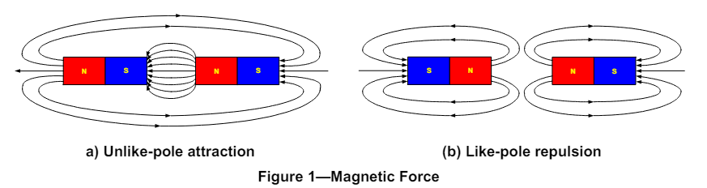
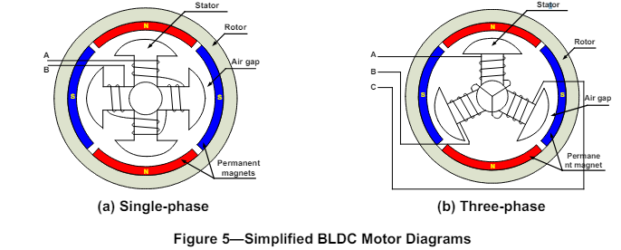
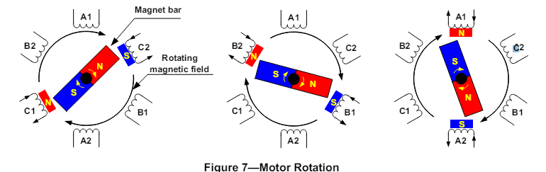
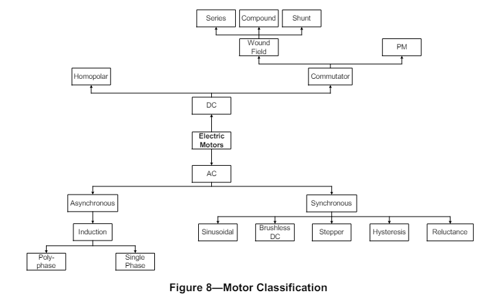
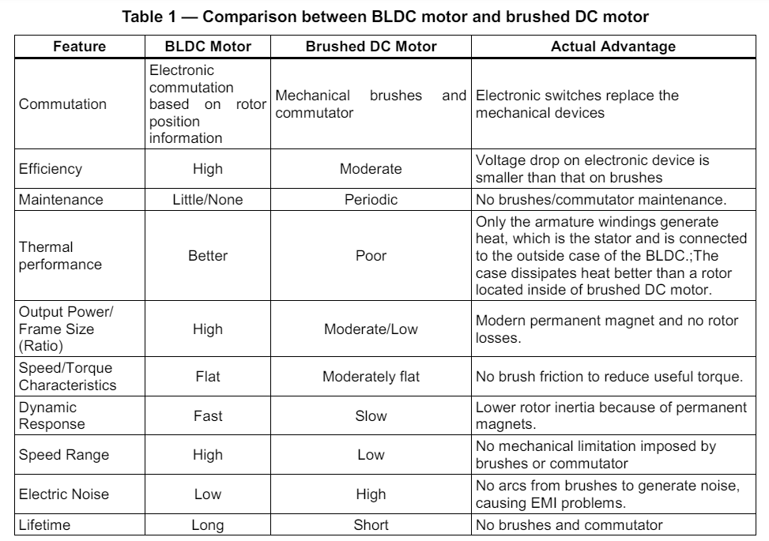
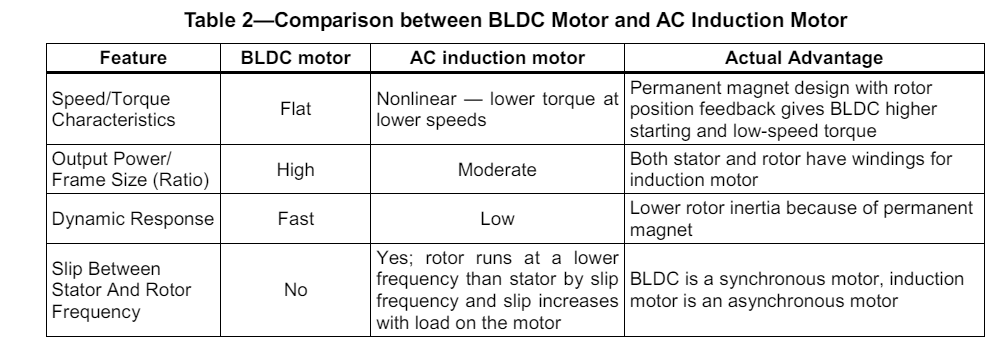
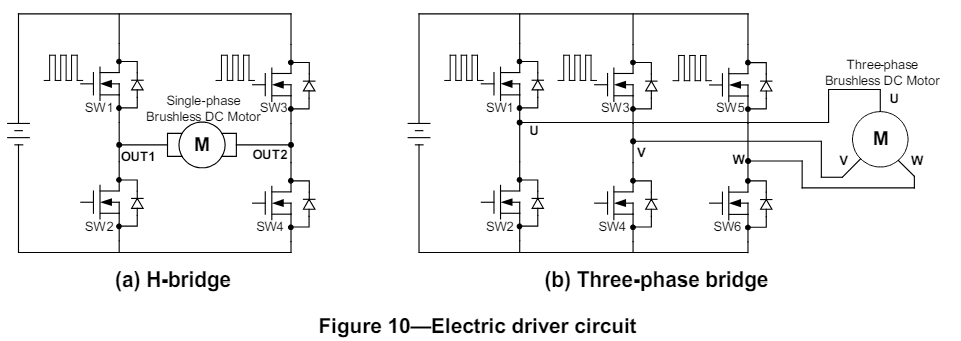
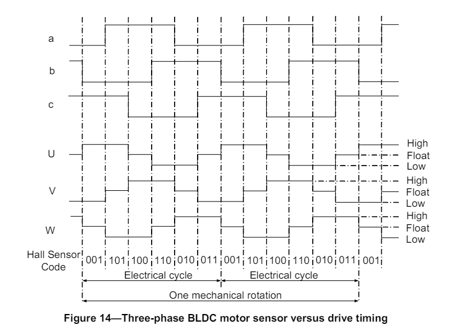

BLDC(Brushless DC) Motor
1. Introduction
The BLDC motor is widely used in applications including appliances, automotive, aerospace, consumer,medical, automated industrial equipment and instrumentation.
The BLDC motor is electrically commutated by power switches instead of brushes. Compared with abrushed DC motor or an induction motor, the BLDC motor has many advantages:
- Higher efficiency and reliability
- Lower acoustic noise
- Smaller and lighter
- Greater dynamic response
- Better speed versus torque characteristics
- Higher speed range
- Longer life
This document initially provides a general overview to familiarize the reader with motor control fundamentals, terms and concepts, and applications. The latter portion of this document provides detailed descriptions of motor structure, working principle, characteristics and control methods.
2. MOTOR FUNDAMENTAL CONCEPTS
2.1 General Motor Principles
Motors convert electrical energy into mechanical energy using electromagnetic principles. The energy conversion method is fundamentally the same in all electric motors. This document starts with a general overview of basic electromagnetic physics before entering discussing the details of motor operation.
a. Magnetic Force
Magnetic poles generate invisible lines of magnetic force flowing from the north pole to the south pole as shown in Figure 1. When magnetic poles of opposite polarity face each other, they generate an attractive force, while like poles generate a repulsive force.
b. Left-Hand Rule
Current in a conductor generates a magnetic field. Placing a conductor in the vicinity of a separate magnetic can generate a force that reaches its apex when the conductor is at 90° to the external field. The left-hand rule can help the user determine the direction of the force, as shown in Figure 2(a).
Left-Hand Rule: Extend the left hand with the thumb and four fingers on the same plane with the thumb pointing out. Face the palm towards the north pole of the external magnetic field and the four fingers in the direction of the current; the thumb points in the direction of the force.
The magnitude of the force can be calculated from the equation below:
F = BILsinθ
Where F is the electromagnetic force, B is the magnetic field density, I is the conductor current, L is the length of the conductor, and θ is the angular difference between B and I.
Given that a coil usually has two effective conductors: a-b and c-d shown in Figure 3(a), these two conductors induce two forces of opposite direction when current passes through in the magnetic field.
The torque is the product of the tangential force acting at a radius with units of force multiplied by length.
If there are N continuous coil turns, and based on the parameters in Figure 3(b), the generated torque
equals:
TD = 2rFN = 2rBILN = KTI
Where:
- TD is the electromagnetic torque (N·m)
- r is the distance between axis OO’ and the conductor (m)
- N is the number of winding turns
- KT = 2rBLN is the torque constant (N·m/A).
c. Right-Hand Rule
The movement of the conductor in the magnetic field induces an electromotive force known as the BEMF. The right-hand rule can determine the direction of the force as shown in Figure 2(b).
The Right-Hand Rule: Stretch out the right hand with the four fingers and the thumb on the same plane,the palm facing the north pole of the external magnetic field, and the thumb pointing in the direction of the velocity of v. The four fingers point in the direction of the induced electromotive force. The magnitude of the induced electromotive force can be calculated as:
E = BLvsinθ
Where:
E is the induced electromagnetic force (V).
v is the velocity of the conductor (m/s).
θ is the angular difference between B and L (rad).
When the motor rotates at an angular velocity of ω (rad/s) and there are N coil turns, the total electromotive force is:
E = 2BLvN = 2BLωrN = KEω
Where:
ω is the angular velocity (rad/s).
r is the internal radius of the motor (m).
KE=2rBLN is the electromotive force constant (V·s/rad).
Based on the parameters from Figure 3(c)
d. Right-Hand Corkscrew Rule
Given that an electrical current flowing in a straight line generates a magnetic field as shown in Figure 4(a) coiling the conductor would therefore generate clear magnetic poles as shown in Figure 4(b), with the direction of the magnetic fields determined by the right-hand corkscrew rule.
Right-Hand Corkscrew Rule: For a current flowing in a straight line as shown in Figure 4(a), the thumb points in the direction of the current I, and the fingers curl in the direction of the magnetic field B. For a coiled current as shown in Figure 4(b), the fingers curl in the direction of the current I, and then the thumb points in the direction of the magnetic field B through the center of the loop.
2.2 Stator
There are three classifications of the BLDC motor: single-phase, two-phase and three-phase. This discussion assumes that the stator for each type has the same number of windings. The single-phase and three-phase motors are the most widely used. Figure 5 shows the simplified cross section of a single-phase and a three-phase BLDC motor. The rotor has permanent magnets to form 2 magnetic pole pairs, and surrounds the stator, which has the windings.
A single-phase motor has one stator winding—wound either clockwise or counter-clockwise along each arm of the stator—to produce four magnetic poles as shown in Figure 5(a). By comparison, a three-phase motor has three windings as shown in Figure 5(b). Each phase turns on sequentially to make the rotor revolve.
There are two types of stator windings: trapezoidal and sinusoidal, which refers to the shape of the back electromotive force (BEMF) signal. The shape of the BEMF is determined by different coil interconnections and the distance of the air gap. In addition to the BEMF, the phase current also follows a trapezoidal and sinusoidal shape. A sinusoidal motor produces smoother electromagnetic torque than a trapezoidal motor, though at a higher cost due to their use of extra copper windings. A BLDC motor uses a simplified structure with trapezoidal stator windings
2.3 Rotor
A rotor consists of a shaft and a hub with permanent magnets arranged to form between two to eight pole pairs that alternate between north and south poles. Figure 6 shows cross sections of three kinds of magnets arrangements in a rotor.
There are multiple magnet materials, such as ferrous mixtures and rare-earth alloys. Ferrite magnets are traditional and relatively inexpensive, though rare-earth alloy magnets are becoming increasingly popular because of their high magnetic density. The higher density helps to shrink rotors while maintaining high relative torque when compared to similar ferrite magnets.
2.4 Operational Motor Theory
Motor operation is based on the attraction or repulsion between magnetic poles. Using the three-phase motor shown in Figure 7, the process starts when current flows through one of the three stator windings and generates a magnetic pole that attracts the closest permanent magnet of the opposite pole. The rotor will move if the current shifts to an adjacent winding. Sequentially charging each winding will cause the rotor to follow in a rotating field. The torque in this example depends on the current amplitude and the number of turns on the stator windings, the strength and the size of the permanent magnets, the air gap between the rotor and the windings, and the length of the rotating arm
3. MOTOR VARIETIES
There are multiple varieties of electric motor differentiated by structure and signal type, but are generally based on the same principle as the three-phase motor previously discussed. Figure 8 diagrams the different motors organized by classifying features.
The primary difference between AC and DC motors is the power type applied to the armature. From this vantage, a BLDC motor actually is an AC motor. The difference between an asynchronous and a synchronous motor is whether or not the rotor runs at the same frequency as the stator. Each motor favors specific applications. Figure 9 illustrates some of the more popular motor designs.
3.1 Introduction to Various Motor Types
a. Brushed DC Motor
A brushed DC motor consists of a commutator and brushes that convert a DC current in an armature coil to an AC current, as shown in Figure 9(a). As current flows through the commutator through the armature windings, the electromagnetic field repels the nearby magnets with the same polarity, and causes the winging to turn to the attracting magnets of opposite polarity. As the armature turns, the commutator reverses the current in the armature coil to repel the nearby magnets, thus causing the motor to continuously turn. The fact that this motor can be driven by DC voltages and currents makes it very attractive for low cost applications. However, the arcing produced by the armature coils on the brush-commutator surface generates heat, wear, and EMI, and is a major drawback.
b. Brushless DC (BLDC) Motor
A BLDC motor accomplishes commutation electronically using rotor position feedback to determine when to switch the current. The structure is shown in Figure 9(b). Feedback usually entails an attached Hall sensor or a rotary encoder.
The stator windings work in conjunction with permanent magnets on the rotor to generate a nearly uniform flux density in the air gap. This permits the stator coils to be driven by a constant DC voltage (hence the name brushless DC), which simply switches from one stator coil to the next to generate an AC voltage waveform with a trapezoidal shape.
c. AC Induction Motor (ACIM)
A sinusoidal AC current runs through the stator to create a rotating variable magnetic field that induces a current in the rotor (typically made of non-ferrous materials). This induced current circulates in the bars of the rotor to generate a magnetic field. These two magnetic fields run at different frequencies (usually ω-s>ω-r for the motor) and to generate torque. Figure 9(c) shows the motor structure.
d. Permanent Magnet Synchronous Motor (PMSM)
The PMSM motor shares some similarities with the BLDC motor, but is driven by a sinusoidal signal to achieve lower torque ripple. The sinusoidal distribution of the multi-phase stator windings generates a sinusoidal flux density in the air gap that is different from BLDC motor’s trapezoidal flux density. However, newer designs can achieve this sinusoidal flux density with concentrated stator windings and a modified rotor structure. Rotor magnet position can significantly alter the electrical properties of a PMSM; Mounting the rotor magnets on the surface—as shown in Figure 6(a)—results in lower torque ripple, while burying the magnets inside the rotor structure—as shown in Figure 6(b)—increases saliency, which increases the reluctance torque of the motor. The structure of PMSM is shown in Figure 9(d)
e. Stepper Motor & Switched Reluctance (SR) Motor
Both stepper motors and SR motors have similar physical structures; The stator consists of concentrated winding coils while the rotor is made of soft iron laminates without coils. It has a doubly salient structure (teeth on both the rotor and stator) as shown in Figure 9(e).
Stepper motors are designed to replace more expensive servo motors. When the current switches from one set of stator coils to the next, the magnetic attraction between rotor and stator teeth induces enough torque to rotate the rotor to the next stable position, or "step." The rotation speed is determined by the frequency of the current pulse, and the rotational distance is determined by the number of pulses. Since each step results in a small displacement, a stepper motor is typically limited to low-speed position-control applications.
There is no reactive torque (magnet to magnet) in an SR motor because the rotor cannot generate its own magnetic field. Instead, both rotor and stator poles have protrusions so that the flux length is a function of angular position, which gives rise to saliency torque. This is the only torque-producing mechanism in an SR motor, which tends to result in high torque ripple. However, due to their simple design, SR motor is very economical to build, and is perhaps the most robust motor available.
3.2 Comparison of Various Motor Types
The BLDC motor has several advantages over other motors. Table 1 and Table 2 summarize the advantages of the BLDC motor when compared against a brushed DC motor and an AC induction motor.
 The primary disadvantage of BLDC is cost, though this is no inherent reason due to the motor itself; the construction of a BLDC motor is actually simpler than that of brushed DC motor or AC induction motor. The higher cost of BLDC motor is caused by the additional driver circuit for BLDC motor. However if the application requires adjustable speed, accurate position control, or requires a driver circuit, then BLDC motor is not only advantageous but also less expensive overall.
4. BRUSHLESS DC MOTOR CONTROL
4.1 Switch Configuration and PWM
Brushless DC motors use electric switches to realize current commutation, and thus continuously rotate the motor. These electric switches are usually connected in an H-bridge structure for a single-phase BLDC motor, and a three-phase bridge structure for a three-phase BLDC motor shown in Figure 10. Usually the high-side switches are controlled using pulse-width modulation (PWM), which converts a DC voltage into a modulated voltage, which easily and efficiently limits the startup current, control speed and torque. Generally, raising the switching frequency increases PWM losses, though lowering the switching frequency limits the system’s bandwidth and can raise the ripple current pulses to the points where they become destructive or shut down the BLDC motor driver.
4.2 Electronics Commutation Principle
a. Single-Phase BLDC Motor
BLDC commutation relies on feedback on the rotor position to decide when to energize the corresponding switches to generate the biggest torque. The easiest way to accurately detect position is to use a position sensor. The most popular position sensor device is Hall sensor. Most BLDC motors have Hall sensors embedded into the stator on the non-driving end of the motor.
Figure 11 shows the commutation sequence of a single-phase BLDC motor driver circuit. The permanent magnets form the rotor and are located inside the stator. A Hall position sensor (“a”) is mounted to the outside stator, which induces an output voltage proportional to the magnetic intensity (assume the sensor goes HIGH when the rotor’s North Pole passes by, and goes LOW when the rotor’s South Pole passes by). SW1 and SW4 turn on when Hall sensor output is HIGH, as shown in Figure 11(a) and (b). At this stage, armature current flows through the stator windings from OUT1 to OUT2 and induces the alternate stator electromagnetic poles accordingly. The magnetic force generated by rotor magnetic field and stator electromagnetic field causes the rotor to rotate. After the rotor signal reaches 180°, the Hall output voltage reverses due to its proximity to a South Pole. SW2 and SW3 then turn on with current reversing from OUT2 to OUT1, as shown in Figure 11(c) and (d). The opposite stator magnetic poles induce the rotor to continue rotating in the same direction.
Figure 12 shows an example of Hall sensor signals with respect to switch drive signals and armature current. The armature current exhibits a saw tooth waveform due to PWM control. The applied voltage, switching frequency, and the PWM duty cycle are three key parameters to determine the speed and the torque of the motor.
b. Three-Phase BLDC Motor
A three-phase BLDC motor requires three Hall sensors to detect the rotor’s position. Based on the physical position of the Hall sensors, there are two types of output: a 60° phase shift and a 120° phase shift. Combining these three Hall sensor signals can determine the exact communation sequence.
Figure 13 shows the commutation sequence of a three-phase BLDC motor driver circuit for counterclockwise rotation. Three Hall sensors—“a,” “b,” and “c”—are mounted on the stator at 120° intervals, while the three phase windings are in a star formation. For every 60° rotation, one of the Hall sensors changes its state; it takes six steps to complete a whole electrical cycle. In synchronous mode, the phase current switching updates every 60°. For each step, there is one motor terminal driven high, another motor terminal driven low, with the third one left floating. Individual drive controls for the high and low drivers permit high drive, low drive, and floating drive at each motor terminal.
However, one signal cycle may not correspond to a complete mechanical revolution. The number of signal cycles to complete a mechanical rotation is determined by the number of rotor pole pairs. Every rotor pole pair requires one signal cycle in one mechanical rotation. So, the number of signal cycles is equal to the rotor pole pairs.
Figure 14 shows the timing diagrams where the phase windings—U, V, and W—are either energized or floated based on the Hall sensor signals a, b, and c. This is an example of Hall sensor signal having a 120° phase shift with respect to each other, where the motor rotates counter-clockwise. Producing a Hall signal with a 60° phase shift or rotating the motor clockwise requires a different timing sequence. To vary the rotation speed, use pulse width modulation signals on the switches at a much higher frequency than the motor rotation frequency. Generally, the PWM frequency should be at least 10 times higher than the maximum motor rotation frequency. Another advantage of PWM is that if the DC bus voltage is much higher than the motor-rated voltage, so limiting the duty cycle of PWM to meet the motor rated voltage controls the motor.
c. Sensorless BLDC Motor Control
However, sensors cannot be used in applications where the rotor is in a closed housing and requires minimal electrical entries, such as a compressor or applications where the motor is immersed in a liquid. Therefore, the BLDC sensorless driver monitors the BEMF signals instead of the position detected by Hall sensors to commutate the signal. The relationship between the sensors’ output and the BEMF is shown in Figure 15. The sensor signal changes state when the voltage polarity of the BEMF crosses from positive to negative or from negative to positive. The BEMF zero-crossings provides precise position data for commutation.
However, as BEMF is proportional to the speed of rotation, this implies that the motor requires a minimum speed for precise feedback. So under very low speed conditions—such as start-up— additional detectors—such as open loop or BEMF amplifiers—are required to control the motor (This is beyond the scope of this application note).
The sensorless commutation can simplify the motor structure and lower the motor cost. Applications in dusty or oily environments that require only occasional cleaning, or where the motor is generally inaccessible, benefit from sensorless communation.